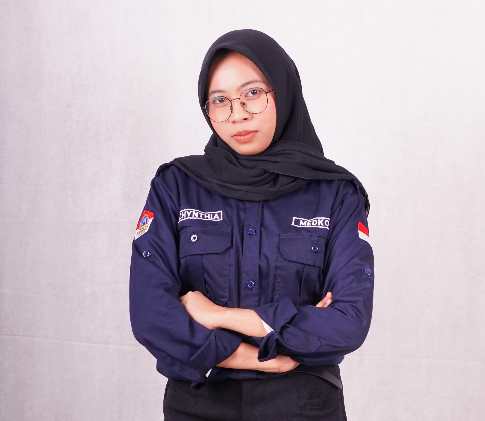
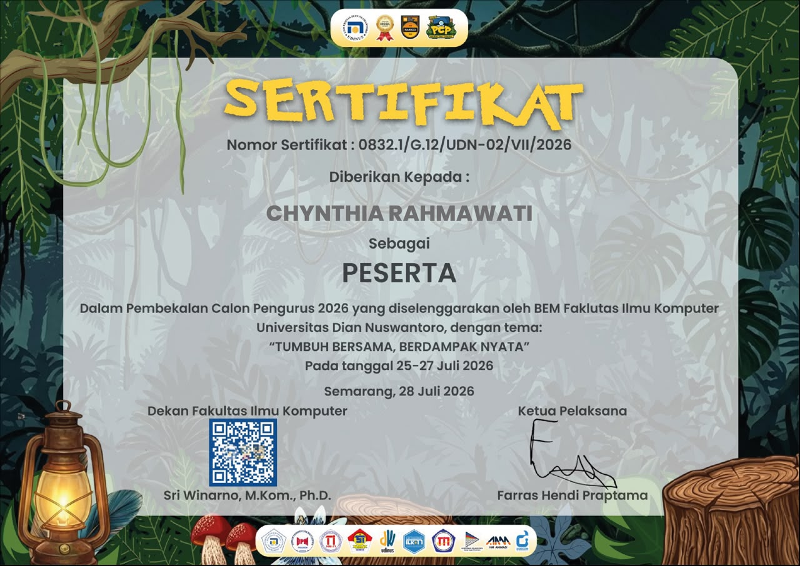
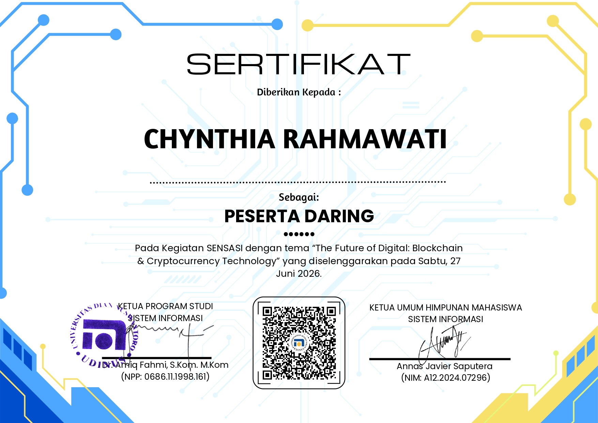
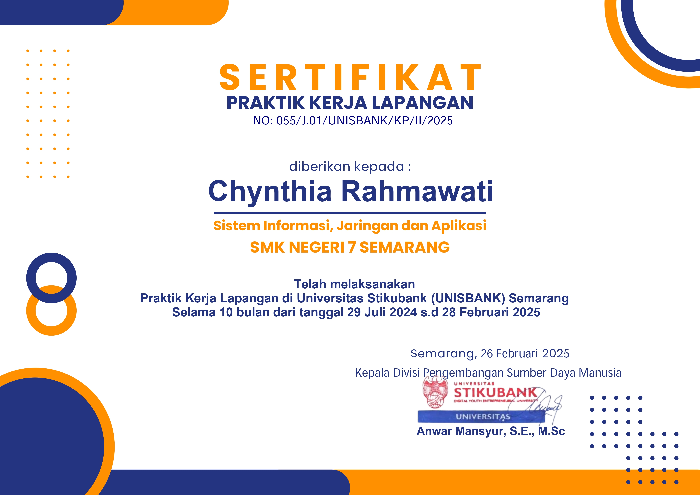
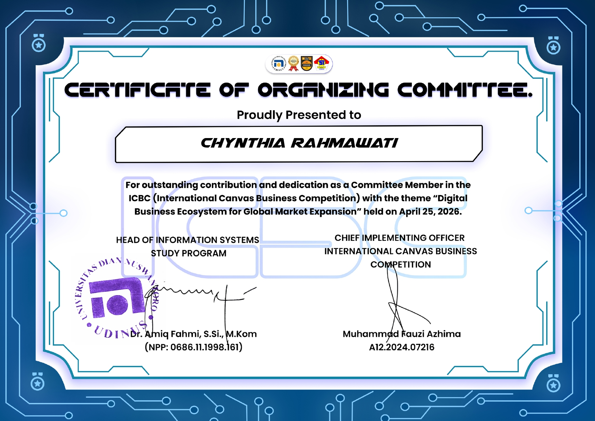
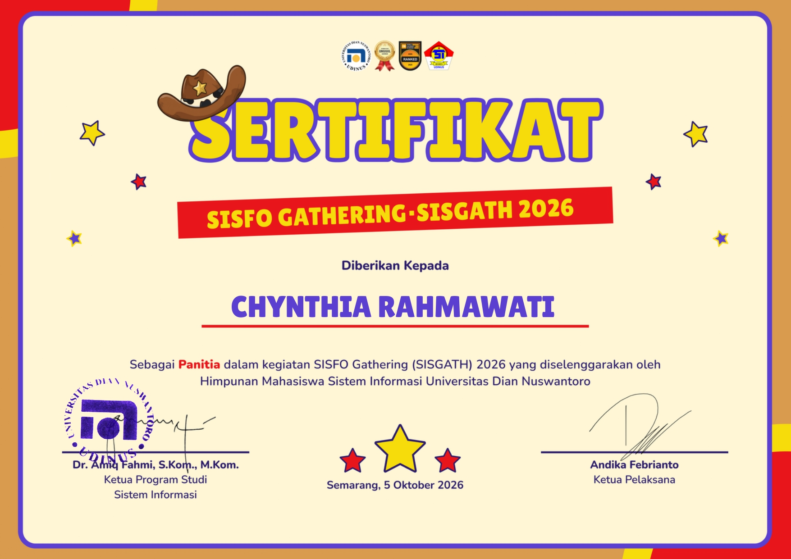

01 — PERKENALAN
Profil Saya

Chynthia Rahma
Saya adalah mahasiswa Program Studi Sistem Informasi, Fakultas Ilmu Komputer, Universitas Dian Nuswantoro. Saya senang mempelajari teknologi, merancang tampilan digital yang nyaman digunakan, dan mengembangkan ide menjadi sebuah karya.
Program Studi Sistem Informasi · UDINUS
02 — PERJALANAN
Riwayat Pendidikan
Universitas Dian Nuswantoro
Program Studi Sistem Informasi
SMK Negeri 7 Semarang
Sistem Informasi Jaringan dan Aplikasi
SMP Negeri 1 Karangrayung
03 — HAL YANG SAYA SUKAI
Keahlian & Hobi
UI/UX Design
Merancang antarmuka dan pengalaman pengguna yang jelas, menarik, serta mudah digunakan.
Desain Grafis
Membuat desain visual untuk menyampaikan informasi secara kreatif.
Web Development
Membangun halaman web menggunakan HTML dan CSS serta mempelajari teknologi web lainnya.
04 — PENCAPAIAN
Sertifikat

Sertifikat PCP 2026
Pelatihan calon pengurus organisasi mahasiswa.

Sertifikat SENSASI
Pengumpulan abstract untuk konferensi.

Sertifikat Praktek Kerja Lapangan
Pengalaman kerja di lingkungan profesional.

Sertifikat Panitia ICBC
Panitia International Canvas Business Competition.

Sertifikat Panitia SISGATH
Panitia Sisfo Gathering 2026
05 — KARYA
Proyek & Aktivitas Akademik
Tugas Pemrograman Web
Pembuatan halaman portofolio menggunakan HTML semantik, CSS eksternal, Flexbox, dan media queries agar responsif pada desktop maupun perangkat mobile.
DIgikom
Juara 1 UI UX Ficpact Competition 2024, Redesign aplikasi Digikom adalah aplikasi layanan digital terpadu yang menyediakan fitur informasi, pembayaran, dan pendidikan, termasuk pembayaran tagihan, PPDB, serta tambahan fitur seperti asrama dan merchant. Dalam proyek ini saya berperan sebagai UI/UX Designer dengan merancang tampilan aplikasi yang sederhana dan user-friendly menggunakan Figma
LuminaQA
LuminaQA merupakan proyek tugas akhir saya saat SMK berupa aplikasi Computer Based Test (CBT) yang digunakan disekolah. Pada pengerjaan proyek ini, saya berperan sebagai UI/UX Designer dengan tugas melakukan riset pengguna untuk menentukan alur penggunaan yang tepat. Selain itu, saya juga merancang tampilan aplikasi agar lebih user-friendly dengan menggunakan software Figma, sehingga aplikasi dapat digunakan dengan mudah oleh guru maupun siswa
SEO specialist Intern
Selama magang sebagai SEO Specialist, saya bertanggungjawab memperbaharui konten website dan membuat video promosi untuk mendukung strategi pemasaran digital perusahaan.
Anggota Medkom HM SISFO
Berpartisipasi dalam media komunikasi organisasi untuk mendukung penyampaian informasi dan publikasi kepada audiens.
Ketua Pelaksana Studi Banding
Bertanggung jawab mengoordinasikan persiapan dan pelaksanaan kegiatan serta memastikan setiap rangkaian acara berjalan sesuai rencana.
Koordinator Pubdok Sisgath
Mengoordinasikan tim publikasi dan dokumentasi dalam mempersiapkan konten visual serta mendukung kebutuhan dokumentasi acara.
Koordinator Trainer SSC
Mengoordinasikan tim trainer untuk mempersiapkan materi pembelajaranserta memastikan kegiatan berjalan dengan baik.
Staff Publikasi dan DOkumentasi
Berpartisipasi dalam kegiatan publikasi dan dokumentasi pada ICBC dan SITALK, termasuk mendukung kebutuhan konten visual dan dokumentasi acara.
Staff Dekorasi
SBerkontribusi dalam persiapan dan penataan dekorasi untuk mendukung konsep visual serta menciptakan suasana acara yang sesuai dengan tema kegiatan SENSASI dan SSC.
06 — TERHUBUNG
Kontak
Terima kasih sudah mengunjungi portofolio saya.